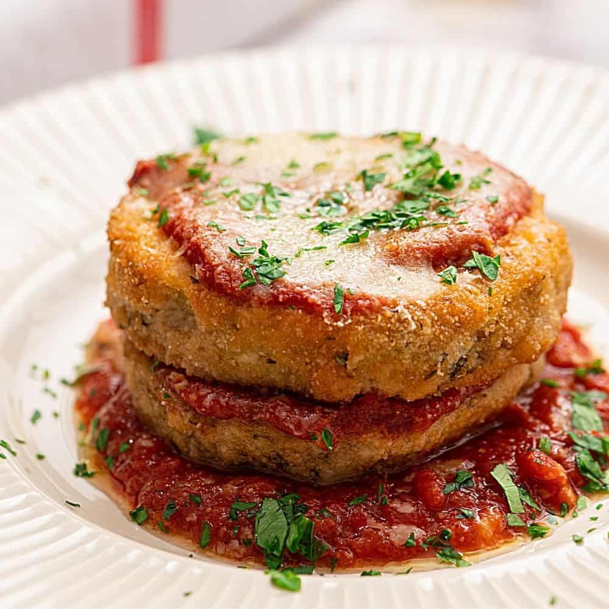

Eggplant Parmesan

Description
Eggplant parmesan is one of my favorite dishes. The eggplant is breaded in panko, and then fried to perfection, and layered with mozzarella cheese and marinara sauce.
Ingredients
- 3 eggplants, peeled & thinly sliced
- 2 eggs, beaten
- 4 cups panko
- 6 cups of marinara sauce, divided
- 16oz. shredded mozzarella, divided
- 1/2 cup grated Parmesan cheese, divided
- 1/2 tsp dried basil
Steps
- Preheat oven to 350F
- Dip eggplant slices in egg, then bread. Place in a single layer on a baking sheet. Bake in preheated oven for 5 minutes on each side.
- In a 9x13 inch baking dish spread marinara sauce covering bottom. Place a layer of eggplant slices in sauces. Sprinkle with mozzarella and parmesan. Repeat with remaining ingredients, ending with cheese. Sprinkle basil on top.
- Bake in preheated oven for 35 mins, or until golden brown.